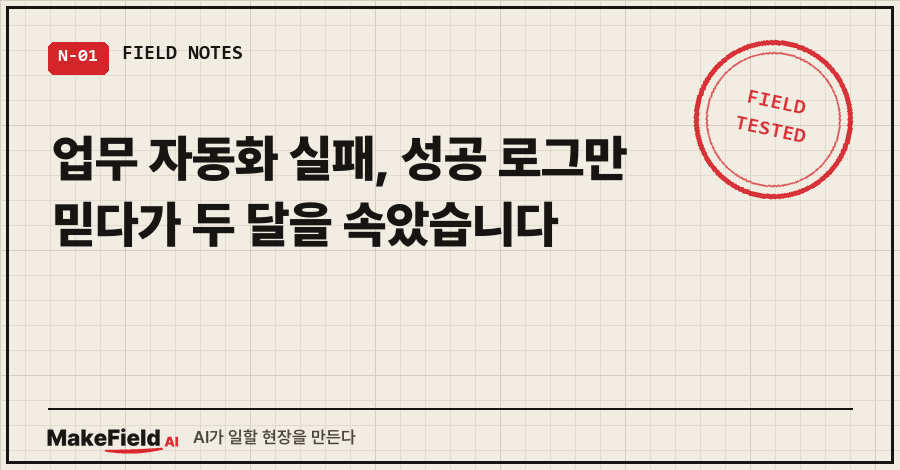

업무 자동화 실패라고 하면 보통 빨간 에러 창을 떠올리시죠?
저도 그런 줄 알았거든요.
근데 제일 질 나쁜 실패는 따로 있더라고요.
매일 "성공"이라고 보고하면서 실제로는 일을 안 하는 놈이요.
제 컴퓨터에 그런 자동화가 네 개나 숨어 있었어요. 어떤 놈은 3주, 어떤 놈은 두 달 동안요..
지난 글에서 AI의 그럴듯한 거짓말 얘길 했는데, 오늘은 AI가 아니라 제가 만든 자동화한테 속은 이야기입니다.

저는 15년차 제어 엔지니어예요.
수소 설비 제어판넬 설계하고 PLC 코드 짜는 게 본업이고요.
개인적으로는 AI 비서 시스템을 만들어서 굴리고 있어요.
윈도우 작업 스케줄러에 자동화 작업이 스무 개 가까이 돌아가거든요.
새벽마다 브리핑 문서 만들고,
휴대폰으로 등록한 일정 동기화하고,
밀린 일에 리마인더 보내고.
매일매일 알아서 착착 돌아가는 줄 알았죠.
1. 대시보드는 온통 초록불이었어요
윈도우 작업 스케줄러에는 "마지막 실행 결과"라는 항목이 있어요.
0이면 성공이에요.
저는 매일 아침 이 값들을 확인했고, 전부 0이었어요.
리눅스든 윈도우든 종료코드 0은 성공이라는 게 상식이니까, 시스템이 건강하다고 믿었죠.
그러다 시스템 전수검사를 한번 크게 돌렸어요.
이번엔 판정 기준을 바꿔봤거든요.
"종료코드가 0인가"가 아니라 "산출물이 실제로 나왔는가"로요.
그랬더니 결과가 뒤집혔어요.
2. 성공한 척, 네 가지 방식
첫 번째는 캘린더 동기화.
매일 아침 돌면서 종료코드 0을 찍었는데, 로그를 열어보니 API 400 에러가 누적 156회 쌓여 있더라고요.
코드 안에서 에러를 삼키고 정상 종료했던 거예요.
그 사이에 일정 7건이 영구 누락됐고요.
스케줄러 입장에선 "프로그램이 죽지 않고 끝났다"니까 성공이 맞아요.
일을 했는지는 아무도 안 물어본 거죠.
두 번째는 리마인더.
조건문 하나가 잘못돼서 함수 초입에서 그냥 돌아 나가고 있었어요.
두 달 동안 발송 건수 0건.
물론 종료코드는 0이었어요.
아무것도 안 하고 끝나는 코드만큼 깔끔하게 성공하는 코드는 없거든요..
세 번째는 공회전이에요.
프로세스는 매일 돌고 로그도 남는데, 정작 만들어야 할 결과 파일이 몇 주째 그대로였어요.
네 번째는 종료코드 미전파.
배치 파일이 내부 스크립트의 실패를 받아 올리지 않아서, 안에서 뭐가 죽든 배치는 0을 반환했어요.
심지어 이건 시스템 건강을 검사하는 헬스체크에서 나왔어요.
감시자까지 성공한 척을 하고 있었던 거죠.
3. RUN 램프만 보고 정상이라고 안 하잖아요
정리하다 보니 판넬 생각이 나더라고요.
제어판넬에는 RUN 램프가 있어요.
근데 현장에서 15년 일하면서 RUN 램프만 보고 설비가 정상이라고 판단한 적은 한 번도 없어요.
유량계 보고,
압력 보고,
실제로 생산물이 나오는지 보고.
램프는 "전원이 들어와 있다"는 뜻이지 "일하고 있다"는 뜻이 아니거든요.
종료코드와 로그도 똑같아요.
그건 "프로세스가 돌았다"는 알리바이지 "일이 됐다"는 증거가 아니에요.
위장 실패 네 건이 최장 두 달 넘게 살아남은 이유가 정확히 그거였어요.
저는 매일 알리바이만 확인하고 있었던 거예요..
4. 그래서 질문을 바꿨습니다
지금은 검사 스크립트가 매일 세 가지를 물어요.
첫째, 산출물 파일의 날짜가 오늘인가.
오늘 것이 없으면 종료코드가 뭐였든 실패로 칩니다.
둘째, 건수가 맞는가.
원본에 일정이 10건이면 캘린더에도 10건이 있어야죠.
셋째, 성공 메시지가 아니라 에러 카운트를 세는가.
"완료되었습니다" 한 줄 밑에 에러가 156줄 있을 수 있으니까요.
이 세 개를 넣고 다시 돌리니까, 초록불이던 대시보드에서 위장 실패들이 줄줄이 걸려 나왔어요.
코드를 대단히 잘 고쳐서가 아니라 질문을 바꿨더니 보인 거예요.
정리하면 자동화는 "돌았다"가 아니라 "나왔다"로 검증해야 합니다!
종료코드 0은 무죄 증명이 아니라 본인 진술일 뿐이에요.
혹시 매일 도는 자동화를 갖고 계시면, 오늘 그 결과물 파일의 수정 시각을 한번 확인해보세요.
저처럼 두 달 묵은 "성공"을 발견하실지도 몰라요.
다음 글에선 AI가 만든 계산서를 부품 데이터시트 원문과 교차검증해서 형번 오류를 잡아낸 이야기를 써볼게요.
여러분의 초록불은 진짜인가요?
현장 엔지니어를 위한 AI 도입·교육 문의: makefield.ai